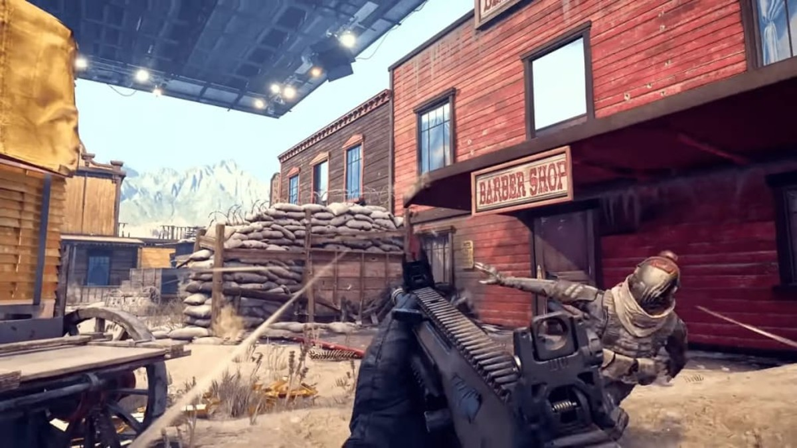
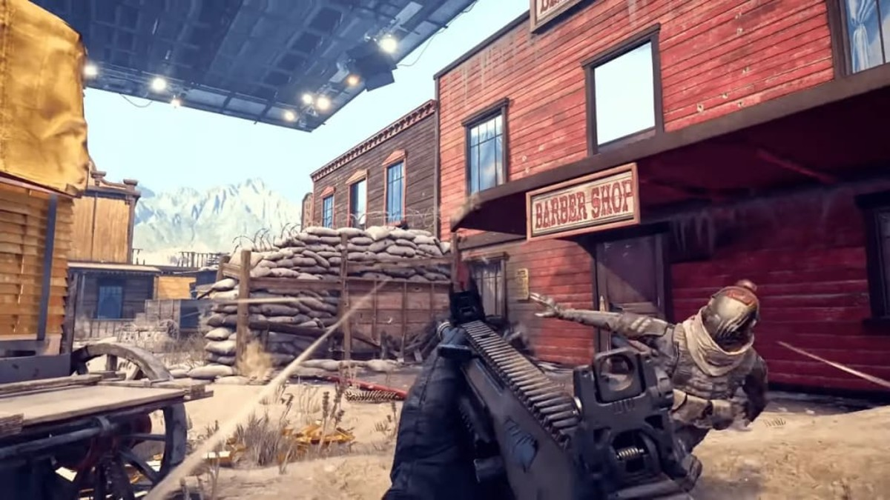
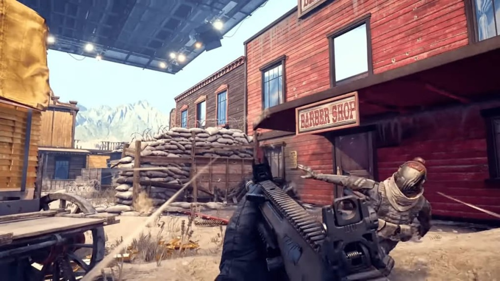

XDefiant es un juego de disparos en primera persona de Ubisoft que se destaca por su enfoque en el combate rápido y dinámico, así como por su estilo artístico único y su personalización de personajes. Ambientado en un mundo contemporáneo, el juego presenta enfrentamientos intensos entre facciones rivales en una variedad de mapas y modos de juego.
XDefiant ofrece una experiencia multijugador emocionante y dinámica que te sumerge en batallas frenéticas y estratégicas contra jugadores de todo el mundo. Con una variedad de modos de juego y mapas detallados, el multijugador de XDefiant promete mantener a los jugadores al borde de sus asientos en cada enfrentamiento.
- Facciones y habilidades únicas: En lugar de clases tradicionales, XDefiant presenta facciones únicas, cada una con sus propias habilidades especiales. Los jugadores pueden elegir entre una variedad de facciones, como Wolves, Outcasts y Cleaners, cada una con su propio conjunto de habilidades distintivas que pueden cambiar el curso de una partida.
- Estilo visual distintivo: XDefiant presenta un estilo artístico único y vibrante que se destaca en el género de los shooters en primera persona. Con gráficos modernos y detallados, así como una variedad de escenarios y entornos dinámicos, el juego ofrece una experiencia visualmente impresionante que sumerge a los jugadores en su mundo vibrante y lleno de acción.
- Enfoque en el combate rápido y dinámico: XDefiant se centra en el combate rápido y dinámico, con enfrentamientos intensos que mantienen a los jugadores en constante movimiento y acción. Los mapas detallados y los modos de juego emocionantes aseguran que cada partida sea única y desafiante, con oportunidades para demostrar habilidades tanto individuales como en equipo.
- Actualizaciones y eventos regulares: XDefiant promete mantenerse fresco y emocionante con actualizaciones regulares y eventos especiales. Los jugadores pueden esperar nuevas armas, habilidades y modos de juego, así como desafíos únicos y recompensas exclusivas que mantendrán la experiencia siempre emocionante y en evolución.
Tanto XDefiant como Call of Duty son juegos de disparos en primera persona, pero cada uno tiene su propio estilo. Call of Duty es como el sabor clásico y confiable, con una base de fans leales y una larga historia de éxitos. XDefiant, por otro lado, es como el nuevo y audaz sabor de helado en el mercado, buscando diferenciarse con su personalización de personajes y acción dinámica. Ambos están en una competencia amistosa por ofrecer la mejor experiencia multijugador, pero al final, lo importante es disfrutar del juego y brindar diversión a los jugadores.
XDefiant está siendo desarrollado por Ubisoft San Francisco, un estudio de Ubisoft, una de las principales empresas de videojuegos a nivel mundial. Ubisoft es conocida por crear una amplia gama de títulos exitosos en diversas franquicias, como Assassin's Creed, Far Cry, Tom Clancy's Rainbow Six, y muchos más. Ubisoft San Francisco, en particular, ha estado trabajando en XDefiant con el objetivo de ofrecer una experiencia multijugador emocionante y única en el género de los shooters en primera persona.
- Mal impacto de bala: Es un aspecto que tienen que mejorar; según qué arma lleves o la conexión que tengas en ese momento, tendrás más opciones de que las balas impacten mejor en el rival.
- Aim assist: El aim assist es un aspecto muy importante para la gente de mando, porque es la función de trackear y apuntar a los otros jugadores. Al ser un juego con mucha movilidad y muy dinámico, muchas veces el aim assist destaca por su ausencia. Este aspecto es muy importante para los jugadores que juegan con mando para disfrutar de la experiencia.
- Time to kill (Opinión personal): El time to kill es una opinión mía de que está un tanto alto, porque muchas veces cuando surge un enfrentamiento y empiezas a disparar tú, el rival te acaba eliminando y tú lo dejas muy bajo de vida. Puede ser que en este aspecto también aparezca el tema del impacto de bala, pero también suele pasar que te encuentras a varios enemigos y no te da chance a matar a los dos o incluso dejas a poquísima vida al primero y te matan.
Prueba XDefiant, ¡es gratis!Clip del Gameplay: Ver Gameplay

Somos un portal dedicado a cubrir toda la información relacionada a los shooters.